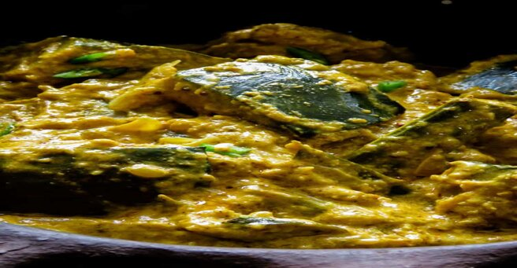

Pumpkin Curry in Roasted Coconut
Ideally, this roasted coconut pumpkin curry will go with any of the Sri Lankan lunch meal plans. If you cook pumpkin at least once a week, then next time, try making this version of the Sri Lankan pumpkin curry for a change, I guarantee you won’t be disappointed with the taste and aroma. You will need a small grinder to powder the roasted coconut and rice or you can simply use a mortar and pestle. Try and feel the incredible taste difference.
INGREDIENTS
- 2 tablespoons of row rice
- 1/3 cup freshly scraped coconut
- 3 tablespoons of oil
- 1 large onion cut into thin slices
- A handful of curry leaves
- A long piece of pandan leaf
- 3 green chilies, split in the middle
- 1 teaspoon mustard seed
- 1/2 teaspoon fenugreek seed
- 500g of pumpkin cut into cubes
- 1 teaspoon chili powder(add more if you can handle the heat)
- 2 tablespoons of roasted curry powder
- 1/2 teaspoon of turmeric powder
- 1 cup of water
- 1 cup of coconut milk
DIRECTIONS
Using a non-stick pan or a clay pot, over medium heat dry roast the raw rice until they turn brown, reduce heat if necessary to avoid burning the raw rice. 3-5 minutes. When done, set aside. Using the same Hanover low-medium heat dry roast the grated coconut until they turn slightly brown, make sure you don’t burn the coconut. 3-5 minutes. Grind the roasted rice and coconut until they turn into a powder. Since the quantity is less you can even use your mortal and pestle to pound the ingredients. Set aside. Cut the pumpkin into 1- inch. Place a medium-sized cooking pan over the stove, pour oil, and let it heat for a few seconds. Add onions, curry leaves, pandan leaves, green chilies, and cook until the onions turn translucent. Add the fenugreek and mustard seed, cook for a few seconds(avoid sautering the mustard and fenugreek for a long period of time as they will turn the curry bitter if burnt) Still over medium heat, add curry powder, turmeric, chili powder, and roasted coconut-rice powder. Cook the ingredients in the pan while constantly mixing it. 3-5 minutes. You’ll get a semi-liquid curry paste. Reduce fire to avoid burning or the paste sticking to the pan. Add the pumpkin pieces to the curry paste and combine. Let the pumpkin cook in the paste for a few minutes while mixing. Pour in water, season with salt, and leave it to slowly simmer until the pumpkin turns slightly soft for 20 minutes. Pour in the coconut milk. Slow simmer until the gravy turns thick, 20-25 minutes. Serve warm.